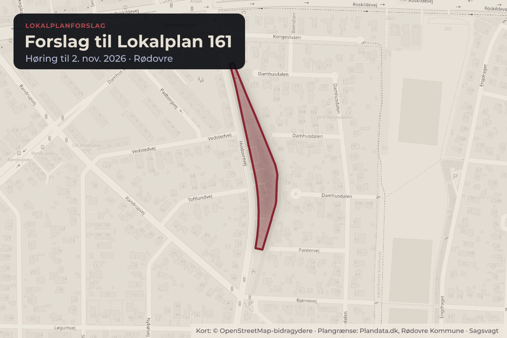
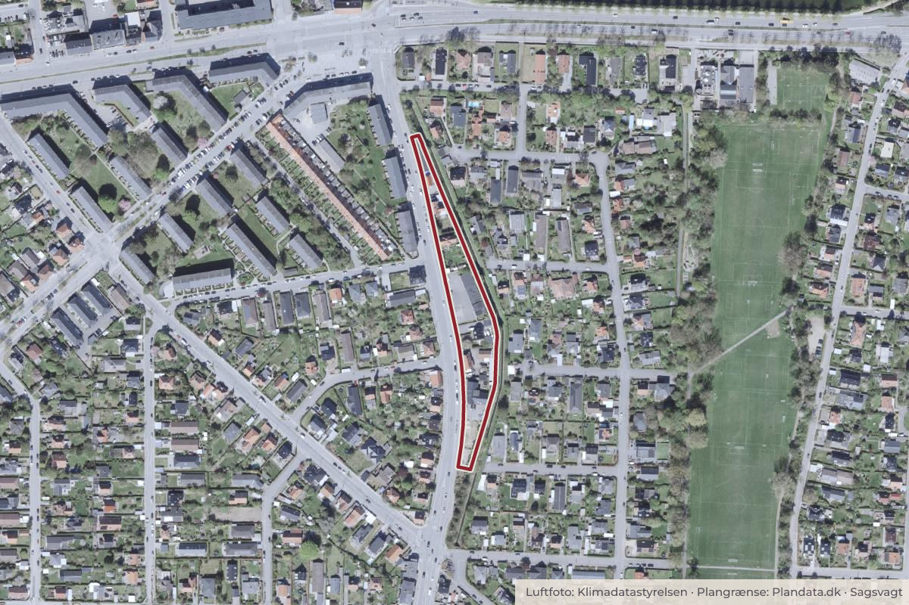

Besluttet 25. august, Kommunalbestyrelsen, Rødovre
Forslag til Lokalplan 161 - Hvidovrevej nordøst
Teknisk Forvaltning indstiller, 1. at Forslag til Lokalplan 161 - Hvidovrevej nordøst fremlægges i offentlig høring i 8 uger, samt 2. at Forslag til Lokalplan 161 ikke miljøvurderes. Beslutning fra By- og Teknikudvalget, 11. august 2026, pkt. 62: Anbefales.

Kort: © OpenStreetMap-bidragydere. Plangrænse: Plandata.dk, Rødovre Kommune.

Har du et billede fra Forslag til Lokalplan 161? Send det til os
Kort fortalt
- Forslaget
- Forslag til Lokalplan 161 - Hvidovrevej nordøst fremlægges i offentlig høring i 8
- Forslag til Lokalplan 161 ikke miljøvurderes.
- Hvem
- Kommunalbestyrelsen, Rødovre Kommune
- Hvornår
- Tirsdag 25. august 2026
- Status
- Besluttet. Godkendt.
Læs hele sagen Kommunens egen tekst
Indstilling
Teknisk Forvaltning indstiller,
1. at Forslag til Lokalplan 161 - Hvidovrevej nordøst fremlægges i offentlig høring i 8
uger, samt
2. at Forslag til Lokalplan 161 ikke miljøvurderes.
Beslutning fra By- og Teknikudvalget, 11. august 2026, pkt. 62:
Anbefales.
Beslutning fra Økonomiudvalget, 19. august 2026, pkt. 169:
Indstilles godkendt.
Sagsfremstilling
Lokalplanens baggrund
Med Kommuneplan 2026, som forventes endelig vedtaget på samme møde som nærværende
sag, er der fastlagt nye rammebestemmelser, som indsnævrer anvendelsen og omfanget af de
otte matrikler, der udgør lokalplanområdet i forhold til den gældende Lokalplan 129 –
Hendriksholmskvarteret. I Lokalplan 129 er de otte matrikler udlagt til blandet bolig og erhverv
med en maksimal bebyggelsesprocent på 60 for den enkelte grund og bebyggelse i minimum 2
og maksimum 3 etager, placeret i en byggelinje 2 m fra vejskel.
Lokalplanens formål
Lokalplan 161 – Hvidovrevej nordøst har til formål at udmønte Kommuneplan 2026’s
retningslinjer og rammebestemmelser for rammeområde 7F05, så den enkelte ejendoms
anvendelse og bebyggelsesmuligheder sker i overensstemmelse med kommunalbestyrelsens
beslutning om at begrænse boligfortætning uden for kommunens byudviklingsområder.
Lokalplanforslaget skal desuden sikre bebyggelsens arkitektoniske kvalitet og ejendommenes
grønne udtryk.
Lokalplanens indhold
Planforslaget udlægger lokalplanområdet til blandet bolig og erhverv, mens følgende specifikke
anvendelser fastlægges for de enkelte matrikler således:
Den nordligste matrikel (3ag) udgør som den eneste matrikel lokalplanforslagets
delområde A, som kun må anvendes til erhverv.
Alle øvrige matrikler - herunder også Hvidovrevej 9-11 - udgør lokalplanforslagets
delområde B, som kun må anvendes til åben-lav boligbebyggelse.
Delområde A fastholdes til erhverv, da trafikstøjniveauet på matriklen er op til 73 dB, hvilket
gør området uegnet til boliganvendelse. Derudover har matriklen en ganske smal form, som
vanskeliggør overholdelse af byggelinjer og krav til en boligs udeopholdsarealer.
I delområde B anvendes ejendommene i dag primært til boliger, bortset fra garageanlægget til
en ambulancetjeneste på matrikel 3g. Vurderingen af den eksisterende erhvervsanvendelses
bygning er, at der ikke er oplagte alternative erhverv – ud over eksempelvis lager – som egner
sig til garageanlægget. Da det er vanskeligt at pege på andre relevante og sandsynlige
erhvervstyper til den pågældende placering, og med udgangspunkt i den eksisterende
boligtypologi (villabebyggelse) i området, er vurderingen, at den fremtidige anvendelse af
garageanlægget bør fastsættes til åben-lav boligbebyggelse i overensstemmelse med
rammebestemmelserne 7F05 i Kommuneplan 2026.
Delområde B omfatter også Hvidovrevej 15-17, hvor By- og Teknikudvalget den 12. maj 2026
besluttede at trække et § 14-forbud tilbage og dermed muliggøre et mindre etagebyggeri. Det
viste sig efter juridisk granskning og korrespondance at en tidligere meddelt byggetilladelse
fortsat var gældende, og at Rødovre Kommune dermed ikke kunne forhindre byggeriet med et
§ 14-forbud. Men idet byggeriet på nuværende tidspunkt ikke er realiseret, finder forvaltningen
det mest hensigtsmæssigt at udlægge ejendommen til åben-lav bebyggelse sammen med de
øvrige ejendomme i delområde B.
For begge de to delområder gælder desuden følgende for anvendelse og omfang:
Delområde A (erhverv)
Ejendommen i delområde A udlægges til kontor- og serviceerhverv, herunder
publikumsrelateret serviceerhverv i miljøklasse 1-2, dvs. virksomheder uden væsentlig
miljøpåvirkning af naboer og omgivelser.
Den eksisterende bebyggelsesprocent i delområde A er høj og matriklen er meget smal. Ved
nybyggeri nedsættes bebyggelsesprocenten til maks. 50. På grund af byggelinje min. 2m fra
vejskel og byggelinje min. 8m til Harrestrup Å kant, vil ny bebyggelse reelt kun kunne placeres i
den sydlige del af grunden og forudsætter helt eller delvis nedrivning af eksisterende
bygninger. Bebyggelse må opføres i maksimalt én etage med udnyttet tagetage, og en
facadehøjde på op til 3,5 m og op til 8,5 m til kip ved tag med hældning.
Delområde B (åben-lav bolig)
De bebyggelsesregulerende bestemmelser for delområde B skal sikre grønne og åbne
boligmatrikler i delområde B. Bestemmelserne for omfang og ubebyggede arealer, svarer til de
fremherskende bestemmelser for kommunens øvrige villaområder (Lokalplan 148A).
Bebyggelsesprocenten fastsættes til maks. 25 %, og bebyggelse må opføres i én etage med
mulighed for udnyttet tagetage. Facadehøjden må være maks. 3,5 m og op til 8,5 m til kip ved
vinkel- eller sadeltag. Hældningen på tag skal være mindst 25o. Der stilles krav om, at
forarealer skal beplantes. Byggelinjen fastlægges til min. 2,5 m fra vejskel og min. 8 m fra
Harrestrup Å, dog med en reduceret byggelinjeafstand på 2 m fra vej for den sydligste, smalle
matrikel.
Bebyggelsens ydre fremtræden
For både delområde A og B gælder følgende i forhold til bygningsmaterialer: Tage skal udføres
med matte tegl, cementtagsten, skifer, fibercementskifer, tagpap eller som grønne tage.
Bygningsoverflader skal være i naturlige og/eller genanvendte materialer som tegl, natursten
og træ.
Ubebyggede arealer
Lokalplanen fastsætter bestemmelser for ubebyggede arealer med henblik på at sikre, at
grundene fremstår grønne. Dette omfatter byggelinjer samt krav om, at mindst 50 % af arealet
mellem byggelinje og vej beplantes, og at hegn mod vej som udgangspunkt etableres som
levende hæk. Der kan dog etableres begrønnede hegn op til 1,8 m af hensyn til
støjafskærmning.
Lokalplanen sikrer desuden bevaring af værdifuld beplantning gennem udpegning af
enkeltstående bevaringsværdige træer og sammenhængende beplantning. Der er udpeget fire
træer fordelt på tre boligmatrikler samt en sammenhængende række af bøgetræer på den
sydligste matrikel. Disse må ikke fældes eller væsentligt beskæres uden tilladelse. Ved
eventuel fældning eller skade stilles der krav om genplantning.
Både for de udpegede bevaringsværdige træer og beplantning i lokalplanområdet, og for
byggelinjearealet langs Harrestrup Å (byggelinjen 8m fra å kant og matrikelskel), er der fastsat
bestemmelser så beplantning langs Harrestup Å ikke ødelægges ved byggearbejder.
Parkering
Parkeringskravene i delområde A er fastsat på baggrund af en konkret vurdering af områdets
størrelse, nuværende lovlige anvendelse (butik) samt mulige fremtidige anvendelser. Kravet er
differentieret, så administration/kontor og publikumsorienterede serviceerhverv skal etablere 1
p-plads pr. 50 m² etageareal, mens øvrige serviceerhverv skal etablere 1 p-plads pr. 100 m².
I delområde B skal der som minimum reserveres areal til to parkeringspladser, hvoraf én skal
anlægges. Der må maksimalt anlægges tre parkeringspladser.
Trafikstøj
Lokalplanområdet er påvirket af støj med niveauer på op til 73 dB i delområde A og op til 68 dB
i delområde B. Lokalplanen indeholder derfor bestemmelser, som skal sikre, at støjniveauet i
boliger og kontorer overholder Bygningsreglementets krav, inden bygninger tages i brug. For
boliger gælder desuden Miljøstyrelsens grænseværdi for indendørs støj på 46 dB ved delvist
åbne vinduer.
Miljøscreening
Der er gennemført en miljøscreening af planens indvirkning på miljøet i henhold til lov om
miljøvurdering af planer og programmer. Rødovre Kommune har vurderet, at planforslaget ikke
skal miljøvurderes. Miljøscreeningen er vedlagt sagen som bilag 2.
Lov- og plangrundlag
Lov om Planlægning
Lov om Miljøvurdering af planer og programmer
Kommuneplan 2026
Økonomiske konsekvenser
Ingen.
Tidsplan
Vedtagelse af planforslag: august 2026
Offentlig høring: september - oktober 2026
Endelig vedtagelse: januar 2027
Beslutning
Godkendt.
Kilde: Rødovre Kommune, Kommunalbestyrelsen, referat fra mødet tirsdag 25. august 2026, punkt 9. Læs den originale sag hos kommunen.